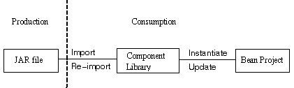

For detailed information on the JAR format, read JAR - Java Archive. You may have to reset the proxies on the Java Workshop help browser if you have difficulties reaching the Java Archive discussion.
The following diagram demonstrates the process a bean goes through in JDE:

There are two aspects to beans in JDE: the producer side and the consumer side. On the producer side is the creation of beans (that you would either use yourself or make available for others). On the consumer side, is the import, use, and update of the beans in your application or applet. These beans could be ones that you created or acquired.
A JAR file can contain files for multiple beans. Each bean and its dependencies should be packaged in a separate JAR file. This is because each JAR file is used in the application/applet as a whole; JDE does not unpack the JAR file. The JAR file is not unpacked since there is no way to determine the runtime dependencies of each bean. For instance, if you have multiple beans in a JAR file but you need only one, you have the overhead of loading the unused beans in the JAR file along with the one you want. After the JAR file is created, you can import the bean into the GUI builder component palette.

For detailed information on the JAR format, read JAR
- Java Archive.
You may have to reset the proxies on the Java Workshop help browser if
you have difficulties reaching the Java Archive discussion.
You can import the bean into the GUI builder component palette by choosing GUI -> Import Component to Palette. When you import a bean, its JAR file is modified: shadow classes are automatically generated and added to the JAR file. This modified JAR file is copied to the components library (the component palette is the visual representation of the components library). The source files for generated shadow classes are stored in the same directory. Only import by copying is supported at this time. Support for import by reference will be available in a future release.
The components library is located at
On Solaris:
$HOME/.jws2.0/ImportedComponents directory
On Microsoft Windows 95 and Windows NT:
%HOME%\jws20\ImportedComponents directory
Once a bean is added to the component palette, it can be used in the GUI design. Invisible beans are supported and can be added to the component palette. They do not have a visible representation in the design. Clicking on an invisible bean in the component palette adds it to the design (the attribute editor opens for the bean verifying its selection.
All the JAR files containing the beans used in the design are copied to the project directory. Usage by copy is supported in the current release; usage by reference will be supported in a future release. Once a bean has been added to the design, you can customize the instance of a bean through the attribute editor or the bean's customizer, if present. However, if a property editor is provided with a bean, GUI builder does not invoke it. When a customizer is provided, the bean customization information is serialized. Serialization and deserialization is handled automatically by the generated application for you.
You can add behavior visually with the Operations dialog box, which allows you to add behavior quickly with minimal to no manual coding. Code generated for the operations are in the JDK 1.0.2 propagation-style events. To use new-style event handling, you must implement the code manually.
When you add operations to a bean using the Operations dialog box, the events fired by the bean do not show up on the list of event filters. To register listeners for those events, you must manually add code. As an aide in adding operations to a bean, you can bring up the Bean Information dialog box to get specific information about a bean's properties, events, and methods. For an example of registering listeners, see Adding Operations to Beans.
When you finish your layout, save it and generate the .java files (choose GUI -> Save Generate GUI File). You can then build and test your application or applet.
When you are ready to deploy the application or applet, you can find out what classes are being used in a project by looking at the Class Usage Report. This dialog box lists all the classes and their sources for all components in the project. You need to copy these files along with your application or applet to the location from which the application or applet is deployed.
The updated beans are not reflected in your design until you reload the design. For both types of updates, a dialog box appears asking if you want to reload the design.
For an example of creating a bean project and importing and updating beans in JDE, see, Tutorial Eight: Creating JavaBeans.
 See also:
See also: